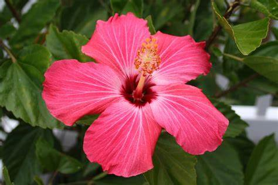

>
TULIPAN
PLANTEL DURANGO
PLANTAS EN MEXICO

TULIPAN
Los tulipanes mexicanos son una especie de gran éxito
como arbusto ornamental por su floración continuada,
flores grandes y de colores vistosos y por el aspecto
brillante de sus hojas. Ver más en: Ornamentalis
TULIPAN